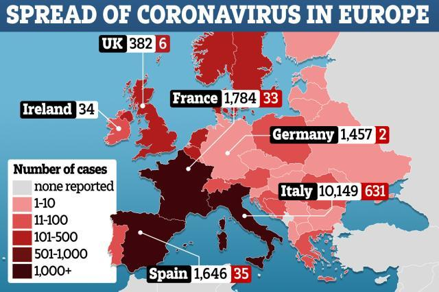

新冠疫情下的脆弱晚年：疾病和心理双重打击
原文链接 备份链接 3月1日，华盛顿州Life and Care养老院的老人因新冠肺炎住院。图片来源：推特 记者：刘芳 “ “更频繁接触到死亡，会让很多老年人投影到自己身上，从而产生抑郁等心理疾病。但由于很多老年人不想被当做弱者，他们选择 …
体坛周报全媒体驻意大利记者 陈硕麟
昨天国内的社交网络热传一个和里皮有关的段子，讲的是他在接受意大利媒体采访时对比了中意两国的防疫手段，并夸赞了中国全国上下在面对疫情时的执行力，同时还对比了一下中国足球。

查证后就可以发现，里皮的确接受了采访，也的确表扬了中国在抗疫过程中的雷厉风行，可他并没有借机批评中国足球，他只批评了意大利在封锁时做得不到位：“还有人从红色区域偷偷跑出来滑雪。”唯一提到中国足球的地方还是在称赞中国面对疫情时的谨慎：“虽然康复人数每天都在增加，但是他们告诉我，联赛要到4月中旬才恢复。”
一些体育从业者马上进行了辟谣，但并不会影响里皮和这个为他打造的段子登上热搜，有一些对中国足球恨铁不成钢的人，也非常乐于看到这样的段子，开始狂欢。

信息爆炸的时代，假新闻层出不穷，之前在国内疫情比较严重的期间，“辟谣”这一话题相当受关注。每天几乎都有一些引起大量关注的新闻在发出后不久被辟谣，甚至再有反转，在中文背景下，人们有充分的能力去核实一个消息的虚实。但如果新闻本身发生在国外，很多人便不再有条件去查证，这样一来，一些假新闻、或者歪曲其原意的片面信息，就可能造成更大规模的认知偏差。
意大利是很好的例子，很多人喜欢把他们叫做意呆，提起意大利人的第一印象是漫不经心，好吃懒做。网上很多和意大利相关的段子和新闻，也在把意大利继续往不靠谱这个路子上推。意大利的确产出了不少喜剧效果很强的新闻供人开心，但也有人会炮制出一些消息，再安到他们头上。

比如意大利刚刚宣布全国停课的时候，网上曾流传一个十几秒的视频，说的是学生在接到消息后上街游行庆祝放假，不过后来我发现那个视频至少拍摄于一周之前，并无法辨别来源，也无法确定里面的人究竟是不是学生，因为在 “游行”队伍里，还有头发花白的人。
今天另外一个关于意大利的话题成为热点，内容是意大利医护优先救治年轻人，并得到了很多媒体转载。但参考来源并非来自意大利本土，而是一家名为politico的美国媒体，其中提到的优先考虑救治年轻人，是他们在采访了意大利一些专业人士后给出的推测。但国内一些媒体转载时，则将这句话当成意大利正在执行的筛选病人的首要标准。鉴于伦巴第大区死亡率居高不下，很多人都倾向于认同这个说法。

前两日意大利重症与麻醉协会（SIAARTI）在官网上发出的一份倡议文件，则也被人当做意大利按年龄筛选救治对象的另一个佐证。在协会给出的建议中，比较重要的几点包括：有必要时需要在重症监护室设置年龄限制，在考虑医疗资源分配的时候，首先考虑病人存活可能性，其次考虑谁能在治疗后拥有更长的存活时间。此外，以上的规则不仅应当执行在新冠病毒感染的救治中，而应当执行在所有病症的治疗中。

SIAARTI倡议文件内容
可以看到，年龄是一个参考标准，但并非唯一的硬指标，尽管在实际中，老年人有更大的可能被选择“牺牲”。最近米兰萨科医院的病毒学专家马西莫·加利成为意大利媒体争相采访的对象，在昨天他曾表示，在临床抢救中放弃一些老年人的主要原因是因为他们已经出现了多种并发症：“在这种情况下，无论朝那个方向进行救治，都是错误的。” 也因为老年人面临的风险更高，现在意大利各个地区都在三令五申，切勿让老年人出门，甚至不让他们和家里的年轻人接触，以规避感染风险。

马西莫·加利
在伦巴第大区，贝加莫是疫情最严重的省份，有当地医生在讲述情况的时候提到，公立医院资源有限，无法不惜成本抢救单个病人。根据综合情况筛选最值得救治的病人，是意大利众多公立医院一直以来的做法，并非新冠疫情之下的特殊选择。但有一点不能否认，现如今医院存在大量的危重患者，每天，甚至每时每刻都要在其中做出抉择，很多人都在承受着人道主义层面的心理危机。
原文链接 备份链接 3月1日，华盛顿州Life and Care养老院的老人因新冠肺炎住院。图片来源：推特 记者：刘芳 “ “更频繁接触到死亡，会让很多老年人投影到自己身上，从而产生抑郁等心理疾病。但由于很多老年人不想被当做弱者，他们选择 …
原文链接 备份链接 3月8日下午，意大利政府通过了新法令，对伦巴第大区以及十一个邻近省份实行封闭式管理。从当晚零点开始，米兰“封城”了。虽然具体的实施方式和疫情所处的环境比起国内有许多不同，但真实的米兰纠竟是怎样的，米兰的人们怎么面对现在 …
原文链接 备份链接 【财新网】（记者 卿滢）3月9日，意大利宣布全国各地进入“封城”，欧洲全境内的新冠肺炎疫情也进一步加剧；西班牙一夜之间确诊人数翻倍，法国文化部长和瑞典央行副行长感染。随着塞浦路斯确诊首例患者，疫情已经扩散至欧盟全境27 …
原文链接 备份链接 世卫组织最新报告显示，截至欧洲中部时间9日10时（北京时间9日17时），中国以外新冠肺炎确诊病例数达到28673例，死亡686例，其中，意大利确诊病例逼近1万。 为遏制疫情蔓延，意大利总理孔特当地时间9日夜间宣布，人员 …
原文链接 备份链接 澎湃新闻记者 南博一 为遏制新冠病毒的传播，3月8日，意大利封锁了该国北部的伦巴第大区和11个邻近省份，1600万人的自由流动受到影响，封锁将一直持续到4月3日。 “我们面临着一个紧急情况，一个全国性的紧急情况，” …